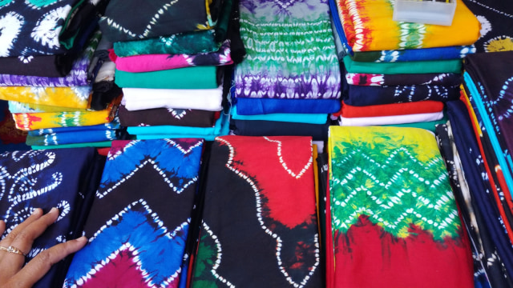

Sasirangan sendiri berasal dari kata Banjar "sirang" atau menyirang yang berarti "menjahit bersama" yang menggambarkan proses jahitan tangan dan tenun kain tradisional yang rumit. Metode pembuatan Sasirangan mirip dengan batik Jawa, yang menerapkan proses pewarnaan pembatas. Bedanya, Sasirangan menggunakan kain pembatas seperti tali atau benang bukan lilin dan 'canting'. Seniman menjahit pola pada kain, kemudian mengikat pola yang diperlukan dengan tali untuk menghindari kontaminasi dengan warna lain, kain kemudian dicelupkan ke dalam pewarna.
Suku Banjar juga meyakini bahwa kain Sasirangan memiliki kemampuan magis untuk mengusir kekuatan roh jahat dan melindungi penggunanya dari gangguan makhluk astral. Karena kemampuannya yang tak biasa, di masa lampau kain Sasirangan hanya bisa dibuat sesuai permintaan saja.
Hal ini dilakukan agar kain Sasirangan dapat dibuat sesuai kebutuhan pembelinya dan tujuan penggunaanya, karena setiap warna yang digunakan memiliki arti tersendiri, sehingga tujuan pengobatannya dapat tercapai. Karena hal ini pula, Sasirangan lebih dikenal sebagai kain pamintaan.
Pemberian warnanya pun tidak sembarangan karena harus disesuaikan dengan kebutuhan. Misalnya warna kuning untuk menyembuhkan penyakit kuning, warna merah untuk mengobati sakit kepala atau insomnia, hijau untuk sakit lumpuh atau stroke. Kemudian hitam untuk demam dan kulit gatal-gatal, ungu berguna untuk menyembuhkan sakit perut, serta coklat untuk menyembuhkan penyakit kejiwaan atau stres.
Virois sasirangan menyediakan informasi penjelasan dan penjualan tentang batik-sasirangan
Email: royyanrozani21@gmail.com
WA: +6812 5182 1740
Copyright ©-Virois